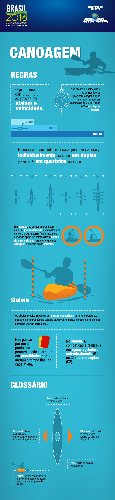

Regras
As regras da canoagem slalom nas Olimpíadas são as seguintes:
- Cada competidor tem que completar um percurso de água com obstáculos, que é composto de portões que devem ser passados no sentido correto e em ordem.
- Os portões são marcados por pares de postes de cor diferente, um vermelho e outro verde. Os atletas devem passar pelo portão com a cabeça e pelo menos um ombro entre os dois postes, sem tocá-los.
- Existem dois tipos de portões: os portões de entrada, pelos quais os competidores devem passar em ordem numérica, e os portões de saída, pelos quais eles devem passar em qualquer ordem depois de terem completado todos os portões de entrada.
- Existem portões de corredeira, que são colocados em partes mais agitadas do percurso, e portões de calmaria, que são colocados em partes mais tranquilas.
- Os atletas recebem penalidades de tempo por tocarem os postes ou passarem pelos portões na ordem errada. Uma penalidade de dois segundos é aplicada por cada erro.
- Os atletas devem completar o percurso no menor tempo possível. O tempo é medido a partir do momento em que o atleta cruza a linha de partida até o momento em que ele cruza a linha de chegada.
- O atleta com o menor tempo total, após somar todas as penalidades, é o vencedor. Em caso de empate, o tempo mais rápido na segunda rodada é usado para determinar o vencedor. Se ainda assim houver empate, os atletas recebem medalhas da mesma cor.

Descrição: Regras Canoagem